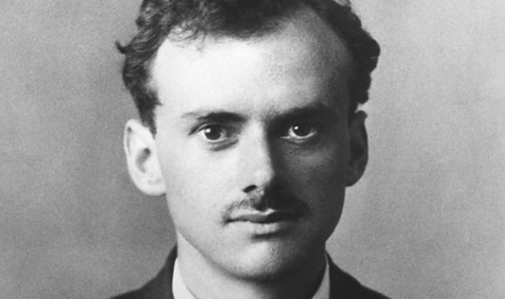

Reflections on Physics and Theology
January 10, 2026

I am frequently asked about why I chose to go to seminary after what seemed like a promising future in physics. I have avoided giving a more extended answer to this question for a long time, mainly because I have been concerned about the dangers of pride in talking about myself, as well as the dangers of people attaching too much weight to the apparently “drastic” choice of withdrawing from a prestigious PhD program. Nevertheless, I do understand that in spite of these risks, some good can still be done by recounting the story, and I feel that now is a good time to write a more thought-out answer, given that this transition happened more than two years ago, and the dust has more or less settled.
In this reflection, I will first offer some more abstract reflections about the relationship between physics and theology. I do this not because it was the motivating factor for my decision, but because I think it shows that such a transition need not seem surprising to an outside observer. Then, I will explain more of the story of what actually happened in my own life leading up to this change in direction. Finally, I will offer some concluding thoughts about calling, sacrifice, aspiration, and gifting.
Physics and Theology
Before I address the question of why in the world a physics student would become a theology student, I’d like to first think about whether this needs to be such a surprise in the first place. In other words, could it be that physics and theology are not as different as we might think?
At first glance, physics and theology do seem to have some straightforward connections. Physics is the study of the natural laws that describe the created order. Theology is the study of God who designed those laws and, through them, upholds all of creation by his providence. And if theology is both the study of God
ad intra (in and of himself) and the study of God
ad extra (in relation to the world), then there is a meaningful sense in which one might say that physics is simply a subset of theology.
However, this is not primarily what I am trying to get at here. That would be a rather mundane and trivial conclusion to make. Rather, what I’d like to suggest is that physics and theology may be quite different in their object of study, but they are actually remarkably similar in
ethos. In other words, physicists and theologians think about different things, but they think about those things for many of the same fundamental reasons. If you have never done both physics and theology, then such a notion may seem absurd. But let me quote you some of physics’ most well-known popularizers and practitioners (all of whom, by the way, were atheists):
Science is not only compatible with spirituality; it is a profound source of spirituality. When we recognize our place in an immensity of light‐years and in the passage of ages, when we grasp the intricacy, beauty, and subtlety of life, then that soaring feeling, that sense of elation and humility combined, is surely spiritual. So are our emotions in the presence of great art or music or literature, or acts of exemplary selfless courage such as those of Mohandas Gandhi or Martin Luther King, Jr. The notion that science and spirituality are somehow mutually exclusive does a disservice to both. (Carl Sagan)
At heart, science is the quest for awesome—the literal awe that you feel when you understand something profound for the first time. It's a feeling we are all born with, although it often gets lost as we grow up and more mundane concerns take over our lives. (Sean Carroll)
I have a friend who's an artist and has sometimes taken a view which I don't agree with very well. He'll hold up a flower and say “look how beautiful it is,” and I'll agree. Then he says “I as an artist can see how beautiful this is but you as a scientist take this all apart and it becomes a dull thing,” and I think that he's kind of nutty. First of all, the beauty that he sees is available to other people and to me too, I believe. Although I may not be quite as refined aesthetically as he is, I can appreciate the beauty of a flower. At the same time, I see much more about the flower than he sees. I could imagine the cells in there, the complicated actions inside, which also have a beauty. I mean it's not just beauty at this dimension, at one centimeter; there's also beauty at smaller dimensions, the inner structure, also the processes. The fact that the colors in the flower evolved in order to attract insects to pollinate it is interesting; it means that insects can see the color. It adds a question: does this aesthetic sense also exist in the lower forms? Why is it aesthetic? All kinds of interesting questions which the science knowledge only adds to the excitement, the mystery and the awe of a flower. It only adds. I don't understand how it subtracts. (Richard Feynman)
Paul Dirac, one of the founders of quantum theory, is probably the physicist most well-known for suggesting some variation of this idea—that in some sense physics is essentially a religious pursuit of beauty. The miracle, for Dirac, was simply that this pursuit of beauty was so unreasonably effective in yielding the truth. Here are some quotes from him:
A physical law must possess mathematical beauty. In the absence of experimental evidence, basic beliefs of theoretical physicists may initially have almost a religious flavor, guided by faith and aesthetics.
Mathematical beauty is a quality which cannot be defined, any more than beauty in art can be defined, but which people who study mathematics usually have no difficulty in appreciating.
A beautiful theory is a theory based on simple mathematical concepts that fit together in an elegant way, so that one has pleasure in working with it. The beauty of the equations provided by nature . . . gives one a strong emotional reaction.
A theory with mathematical beauty is more likely to be correct than an ugly one that fits some experimental data.
Of all the physicists that I met, I think Schrödinger was the one that I felt to be most closely similar to myself. I believe the reason for this is that Schrödinger and I both had a very strong appreciation of mathematical beauty. It was a sort of act of faith with us that any equations which describe fundamental laws of Nature must have great mathematical beauty in them.
I quote these men not to suggest that they are somehow “closer” to God than they thought. To do so would be a dishonest representation of their beliefs. I am quoting them to show that the practice of physics, and all science in general, is hardly the cold, rational enterprise that it is so often made out to be. The methodology may evidential and scientific, but the “why” is surprisingly religious. Physicists do believe in a deeply mechanistic view of the universe, but the endeavor to probe its secrets is anything but.
This is something that I discovered early on, when I was just getting my feet wet studying physics. There were, of course, many moments when I only studied for the sake of knowledge or competition, yet the sense of transcendence was always inescapable. It always awed me that the physical universe could be described so elegantly—that such extravagant variety would emerge from such fundamental simplicity. The very
ethos of physics which drew me in as a young student seemed to me as having more in common with mountain climbing or classical music than with engineering or chemistry or any other supposed counterpart. Whether the natural order is evidence for a Creator is another matter; what is, I think, hard to deny is that the
practice of physics as an academic discipline has deeply spiritual overtones.
There is much more that could be said, but I fear that I am neither philosophical nor eloquent enough to say it. Suffice it to say, I pursued physics because I thought it was glorious and beautiful and true and satisfying. It simply happened that I found a discipline that was
more glorious and
more beautiful and
more true and
more satisfying. Therefore, I think that a switch from physics and theology ought not to be surprising.
The Real Story
Of course, life is never quite as romantic as our philosophical imaginations, and the real story of what actually happened is rather mundane.
I became a Christian quite suddenly when I was 16 years old, at a time when I was vigorously pursuing physics, especially through Olympiads. The story of how that happened is probably not one that I will go into much detail publicly, seeing as how it is not especially relevant to this story, but it did happen.
I will say though, looking back on my early years as a Christian, I always struggled with balancing my studies and my spirituality. Times of serious spiritual growth inevitably meant that my physics would be put on hold, and times of intense study inevitably led to long periods of stagnant devotion in my religious life. It was probably only during my second and third years of college that I really learned how to balance these things.
Coincidentally, it was during this time in college that two things began happening simultaneously. I didn’t know it at the time, but they were headed on an apparent collision course.
First, I was having a lot of success in my coursework and in my research. I was excelling far beyond my peers in my courses, and our research group was coming out with great results. I was being nominated for awards, and it was looking like I could both graduate early and still get into top PhD programs. Nevertheless, I was getting the nervous feeling that this wasn’t exactly what I wanted to be doing for the rest of my life. I enjoyed research (to a certain extent), but I was starting to realize that I didn’t find it personally meaningful enough to be doing it for decades.
Second, I was growing immensely in my own love for God, his people, and his Word. I was starting to read my Bible seriously, and I began to take prayer more seriously. In my Christian fellowship, I was serving in a lot of different ministries and meeting up with people nearly every day. I was also finally sitting under good expositional preaching of the Bible every Sunday, and I was listening to hours and hours of preaching online whenever I had the chance. Even in the lab as I was running tests or doing device fab, I was listening for hours on end to men such as R. C. Sproul, Paul Washer, Tim Keller, and John Piper. I had never known that such profound doctrine could be paired with such rich spirituality. Gradually, I was being exposed to Reformed theology, the glory of God, the wonders of the gospel, and, above all, the sweetness of Christ.
These two trends continued throughout my second and third years of college, and inevitably they came to a head. In February of my third year, I got into Stanford’s PhD program for electrical engineering. (Even by then, I knew that I didn’t want to go into academia after grad school, so I had applied to EE programs instead of physics.) I was very happy, but this excitement wore off quickly. I had a sinking feeling that this was not what I wanted to do with my life at all. I already knew I didn’t want to do physics as a career, but I quickly realized that I wanted to do engineering even less (no offense to any engineers reading this). All the while, it felt as if a career in ministry was beckoning.
That March, I visited both Berkeley and Stanford, talking to potential advisors. The all-expenses-paid trip was impressive and all, but I had a clear sense that I did not belong. Everybody else was excited to be there and network with potential advisors, but it felt as if my heart had said goodbye to research a long time ago. I continued along with the admission process and committed to Stanford rather reluctantly, but I was already looking for an exit.
Around this time, I was also writing long-form devotionals once every few days, mostly for personal edification but also to share with interested friends. I was starting to fall in love with this simple process of taking a text, studying it carefully, and slowly crafting phrases and sentences to communicate implications of the text for life and worship. All this writing and theological reflection made me wonder whether further theological training would be a fruitful next step.
So, when I should have been studying up on my potential PhD advisors, I was actually spending a lot of time researching different seminaries and M.Div. programs. I kept this a total secret for a few months. (Surprisingly, even so, two friends of mine asked me whether I was considering seminary, despite knowing full well that I had already committed to Stanford.)
Around April, after meditating on Matthew 8:20 at a retreat and feeling somewhat of a sense of conviction before God, I personally resolved before the Lord that I would begin giving this option of going to seminary my full attention and consideration. I kept this a secret for two more months as I prayed, after which I began to consult my pastors. Two more months later, I enrolled at Southern Seminary and withdrew from Stanford.
Of course, there is more to the story that has been glossed over, including many of the doubts and fears that I wrestled with, some of which were worldly and many of which were more than valid. It was by no means an easy time for me, and I had many internal battles and conflicts of the soul. Nevertheless, I think that what is contained here is a fair and accurate summary of what happened.
Reflections
What do I think of this whole thing more than two years later?
First, there is the inevitable question of whether this was the
right decision. That is not an easy question to answer. It is one that I have thought about more than once, though I have tried not to lose too much sleep over it. Did it turn out well? I suppose it did. But what is meant by “well”? And do the
right decisions always turn out “well”? No, of course not—we are not in control of the events that will transpire based on our decisions. The Lord is sovereign over both our right and our wrong decisions, and he causes good and bad to come from both. I think it is better to say that the
rightness of a decision is determined solely by whether it was made in faith and wisdom. And when I judge my decision based on those criteria, I feel content with it. Of course, there were some things I would have done differently. But on the whole, I am profoundly grateful for the choice I made, and for the Lord’s hand on me during that time.
Second, it is important for me also to address those who think me to be particularly pious and saintly for giving up such a unique opportunity “for the Lord.” I know that the “drama” of my decision might lend credence to such an idea, but any notion of me having “given up” something ought to be dispelled. I did not “give up” going to Stanford as a way of somehow sacrificing something for God. It is not as if a seminary student brings more glory to God than a PhD student. Nor is it as if God were particularly pleased with such sacrifices—“Heaven is my throne, and the earth is my footstool; what is the house that you would build for me, and what is the place of my rest?” It may be impossible to believe for some, especially those who come from a certain culture where academic prestige is king, but I simply realized that I did not want to go to Stanford, and that I would much rather study theology and better equip myself to serve Christ’s church vocationally. In other words, it was really more a matter of aspiration and not obedience. [
1]
Third, there is the difficult question of whether I “threw away” my gifts. After all, I spent more than half my life thinking nonstop about either math or physics. God clearly, in some sense, gave me the intellectual gifts required to have success in quantitative fields. Not only that, very few people have the opportunity to study and witness at a place like Stanford. In choosing not to take advantage of the gifts and opportunities that he ordained for my life, did I somehow fail to steward what God entrusted to me? This is a weighty question that, I confess, will probably be a source of struggle for me for a long time. Nevertheless, here are several biblical truths that I think we ought to hold in tension as we consider any such matters:
- God’s glory in Christ and his church is more important than anything else, including our gifts.
-
God can be greatly glorified in the usage of our natural gifts (Ex 31:1–11), though not always (Matt 7:21–23).
-
God can be greatly glorified in the sacrifice of our natural gifts (Phil 3:7), though not always (Ps 51:16–17).
-
There is biblical warrant for remaining in one’s “station” in life (1 Cor 7:17–24).
-
There is biblical warrant for leaving everything to honor Christ (Matt 10:37–39; Luke 18:29–30).
-
Aspiration matters in determining our vocation, especially in ministry (1 Tim 3:1).
-
The Christian ultimately has significant freedom in determining his vocation, within certain bounds (Col 3:23).
Based on these principles, I conclude that gifting is a helpful and significant but not automatic indication of what one ought to do with one’s life.
Concluding Remarks for the Non-Believer
Most of this reflection has been addressed to believers who share my understanding of God and faith. It may be confusing and irrational to you if you do not have these beliefs about God. Here would be my humble suggestion for you:
Suppose God is real, and that he is infinite, glorious, good, righteous, and loving. Ought we not conclude that he should be our highest end? If God is eternal, the source and end of all things, then what good is it if we confine ourselves to temporal concerns without regard for who God is and what he has purposed? Wouldn’t he deserve all worship and a life lived in service to him?
Suppose, further, that the basic claims of Christianity are true—that the world is hopelessly suffering under the effects of sin, and that God sent a Savior to do away with sin once and for all, such that the benefits of salvation are only available through trusting by faith in this unique message of deliverance. If the problem is indeed so bleak, and the solution indeed so glorious, then ought we not devote all our energy to proclaiming this unique message that has the power to save? Wouldn’t all of our rather modest ambitions that revolve around the concerns of this temporal world inevitably matter to us just a little less, at least in comparison?
So, hopefully that clarifies where the heart of the matter really lies. Is God real? Are the basic claims of Christianity true? I have answered yes to both questions.
[
1] I especially relate to Vern Poythress's story, which he recounts
here.